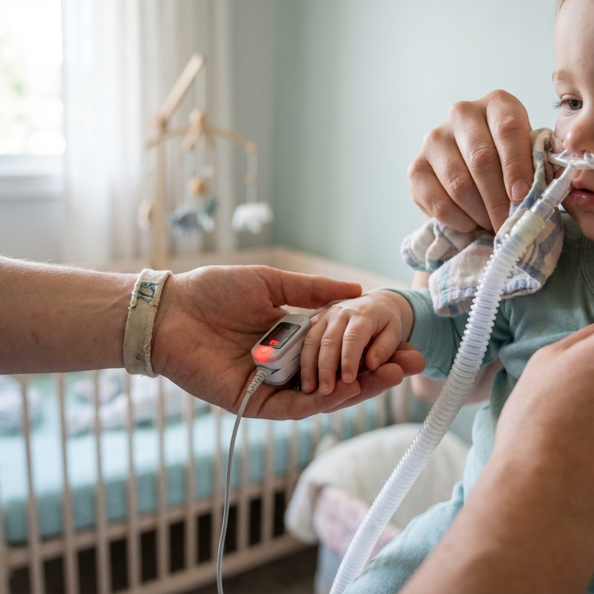
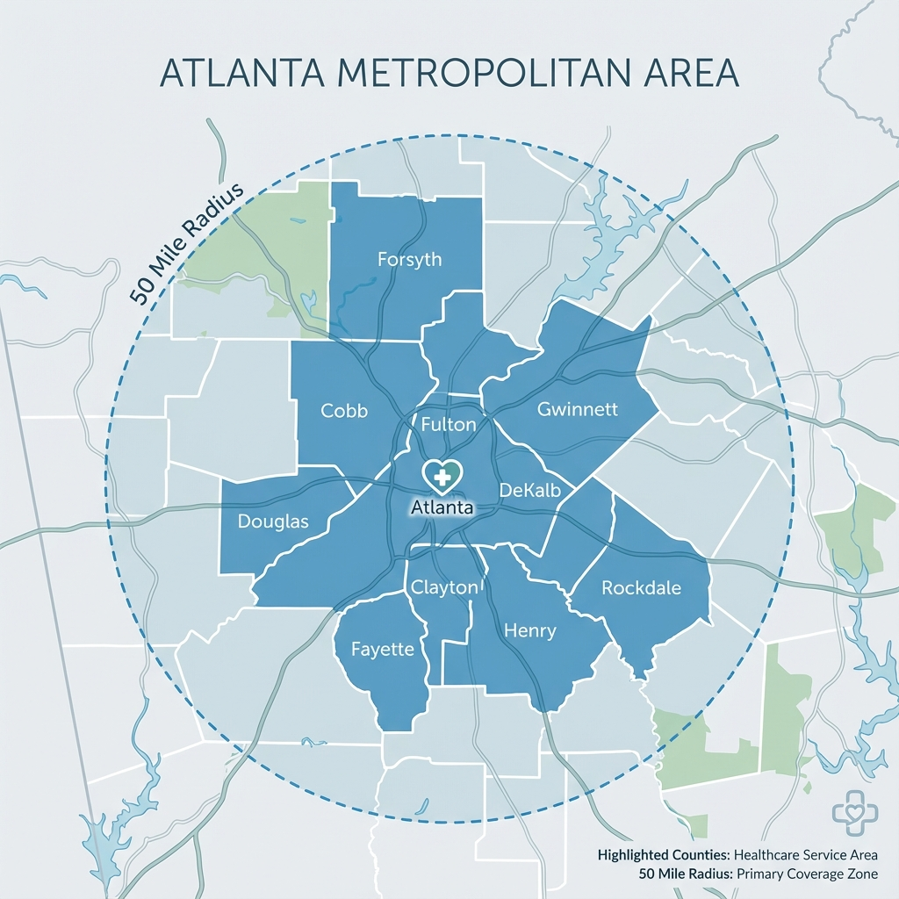

Atención compasiva para los pacientes más preciados de Georgia
Nos asociamos con familias para brindar servicios profesionales de enfermería a domicilio para niños médicamente frágiles, en sin costo a través de Georgia Medicaid.
Su socio en atención pediátrica domiciliaria
En No Cost Nurse, entendemos que cuidar a un niño médicamente frágil es a la vez una profunda responsabilidad y un extraordinario acto de amor. Nuestra misión es asociarnos con las familias de Georgia mediante proporcionando Servicios de enfermería a domicilio profesionales y compasivos sin costo alguno. a los niños menores de 21 años que estén cubiertos por Medicaid.
Nos especializamos en apoyar a niños con necesidades médicas complejas, desde bebés que requieren atención las 24 horas. seguimiento a adultos jóvenes en transición a través de etapas críticas de desarrollo. Nuestro equipo de licenciados enfermeras, asistentes de enfermería certificados y asistentes de cuidado personal brindan atención médica especializada en la comodidad y la seguridad de su hogar, donde la curación se produce mejor.
Cada familia a la que servimos se convierte en parte de nuestra familia extendida. No solo brindamos atención clínica: brindamos tranquilidad, un respiro para los padres exhaustos y la tranquilidad que se obtiene al saber que su hijo está en Manos expertas y atentas.

¿Listo para saber si su hijo califica?
Todos los servicios están 100% cubiertos por Georgia Medicaid, sin costos de bolsillo para su familia.
Comience el cuidado de su hijo hoyLo que diferencia a No Cost Nurse del resto
Servicios 100% gratuitos
Cada servicio que brindamos está totalmente cubierto por Georgia Medicaid para niños elegibles. menores de 21 años. Sin copagos, sin deducibles, sin cargos ocultos, nunca.
Acceso al programa GAPP
Ayudamos a las familias a inscribirse en el Programa Pediátrico de Georgia (GAPP), permitiendo a los padres y miembros de la familia se conviertan en cuidadores remunerados de su propio hijo.
Equipo Pediátrico Especializado
Nuestras enfermeras y cuidadores reciben capacitación especializada en salud pediátrica en el hogar, incluidas intervenciones respiratorias, nutricionales y médicas complejas.
Cuidado en casa
Llevamos atención de calidad hospitalaria a su hogar, donde su hijo se sienta más cómodo. rodeado de familia y capaz de mantener rutinas normales.
Enfoque centrado en la familia
Involucramos a las familias en todos los aspectos de la planificación de la atención. Sus comentarios, preferencias y Los objetivos están en el centro de todo lo que hacemos.
Soporte 24 horas al día, 7 días a la semana
Nuestro equipo clínico está disponible las 24 horas para emergencias y preguntas urgentes. Nunca estará solo cuando se asocie con No Cost Nurse.

Formación Pediátrica Especializada
Nuestro equipo clínico mantiene capacitación especializada en salud pediátrica en el hogar, asegurando que su hijo reciba Atención de la más alta calidad incluso para las necesidades médicas más complejas.
Nuestras capacidades clínicas incluyen:
- Cuidado y seguimiento de la traqueotomía.
- Manejo del ventilador
- Terapia de oxígeno
- Monitorización de oximetría de pulso
- Tratamientos con nebulizador
- Alimentación por sonda G y sonda J
- Cuidado de heridas y cambios de apósito.
- administración de medicamentos
- Monitoreo de convulsiones
- Cuidado de la vía central
Cada enfermera y cuidador de nuestro equipo tiene certificaciones vigentes en RCP, primeros auxilios y respuesta a emergencias pediátricas. Invertimos en educación continua para mantenernos actualizados con las mejores prácticas en Atención pediátrica domiciliaria.
Profesionales compasivos, atención excepcional
Nuestro diverso equipo de profesionales de la salud reúne experiencia clínica, compasión genuina y una compromiso compartido para mejorar las vidas de los niños médicamente frágiles de Georgia.

Sirviendo a las familias del área metropolitana de Atlanta
Brindamos servicios de enfermería pediátrica a domicilio dentro de un Radio de 50 millas de Atlanta, cubriendo los siguientes condados de Georgia:
| Condado | Condado | Condado |
|---|---|---|
| fulton | DeKalb | gwinnett |
| cobb | Clayton | Enrique |
| Fayette | Rockdale | douglas |
| Forsyth | — | |
¿No ve su condado en la lista? Contáctenos para discutir el servicio disponibilidad en su zona. Siempre buscamos ampliar nuestro alcance para servir a más familias de Georgia.

Por qué hacemos lo que hacemos
Nuestra Misión
Brindar atención de enfermería a domicilio excepcional y compasiva que empodere médicamente niños frágiles puedan prosperar en la comodidad de sus hogares, mientras apoyan y educan a sus familias cada paso del camino.
Nuestra Visión
Una Georgia donde todos los niños médicamente frágiles tengan acceso a un hogar de alta calidad atención de enfermería, independientemente de las circunstancias económicas de su familia, y donde los padres sean reconocidos y apoyados como socios esenciales en el equipo de atención de su hijo.
Nuestros valores fundamentales
Compasión
Lideramos con empatía y amabilidad en cada interacción.
Excelencia
Perseguimos los más altos estándares de atención clínica.
integridad
Actuamos con honestidad y transparencia siempre.
La familia primero
Ponemos a las familias en el centro de todo lo que hacemos.
¿Listo para aprender más?
Contáctenos hoy para descubrir cómo No Cost Nurse puede apoyar a su familia, sin costo alguno a través de Georgia Medicaid.